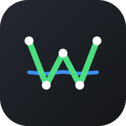
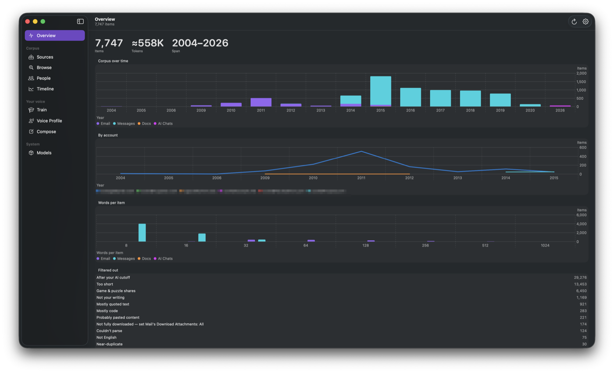
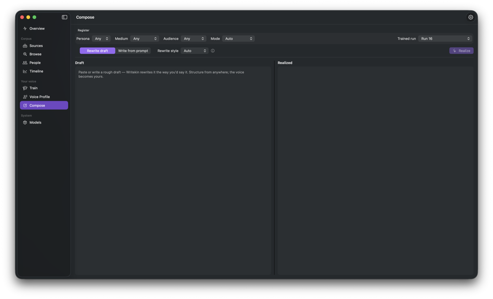
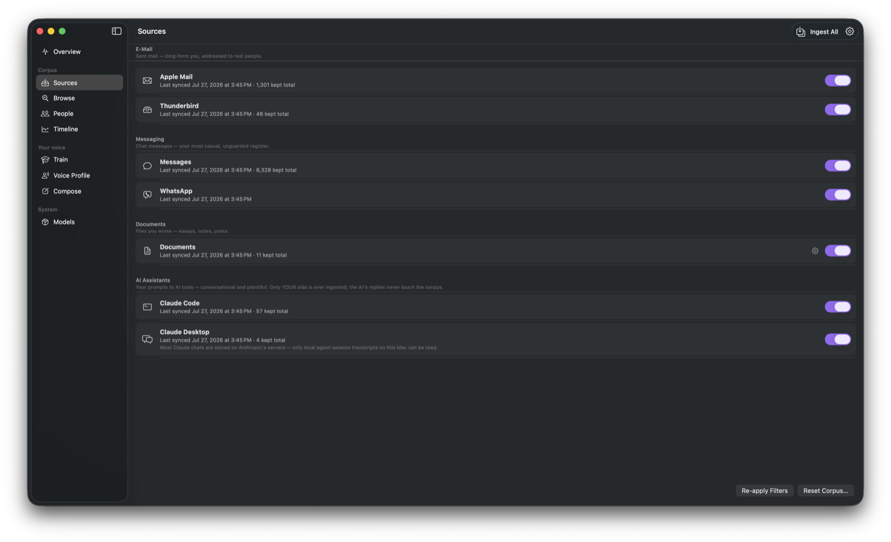
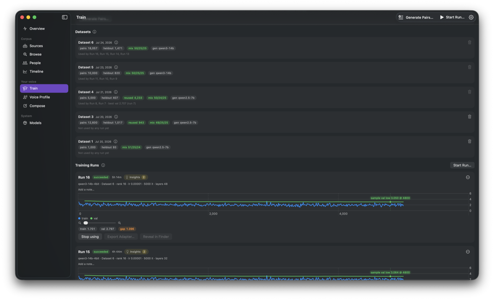
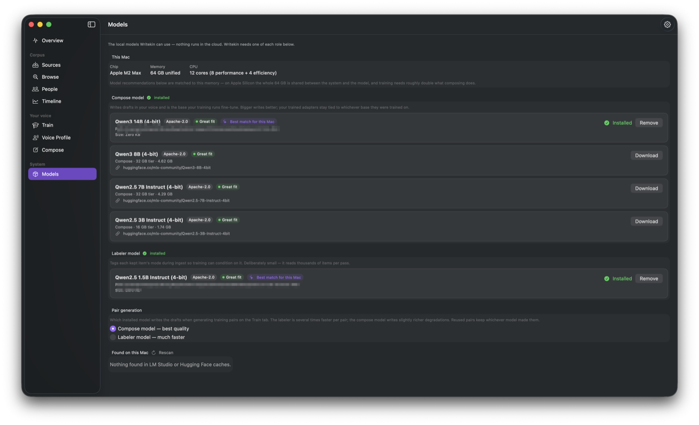

WritekinWritekin fine-tunes a language model on your own writing — Mail, Messages, documents, chats — entirely on your Mac, so it can draft and revise in a voice that's actually yours.

Privacy
Process
In use




Questions
Requirements
Messages support uses the open-source imessage-exporter (GPL-3.0), downloaded on demand — never bundled with the app.